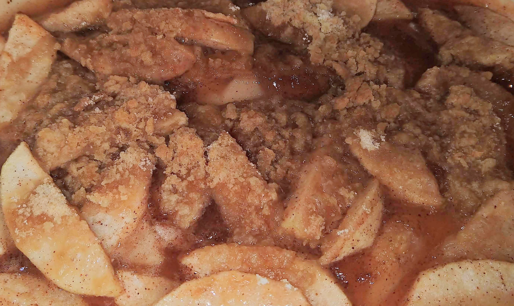

Country Apple Crisp
Country apple crisp is one of my favorite dessert foods, and it is really simple to make. You can substitute the type of apple, or make it into the pie (put it into a pie crust and don't make the crumbs). It is best served with vanilla ice cream.
Preparation time: 15 minutes
Cook time: 40 minutes
Serves: 4-6
Ingredients
- 4 large granny smith apples (peeled, cored and sliced)
- 1/2 teaspoon cinnamon
- 1/4 teaspoon nutmeg
- 1/8 teaspoon ground allspice
- 3/4 cup granulated sugar
- 3 tablespoons flour
- A pinch of salt
- 2 tablespoons lemon juice
- 2 tablespoons butter
- 3 tablespoons butter
- 1/2 cup flour
- 1/2 cup brown sugar
For the filling:
For the crumbs:
Directions
- Preheat oven to 450
- Coat apples in lemon juice in a large oven-safe baking pan
- In a medium mixing bowl, combine cinnamon, nutmeg, allspice, sugar, flour, and salt
- Mix dry ingredients with the apples, making sure to evenly coat all apples
- Dot mixture with butter and mix
- In a medium mixing bowl, prepare the crumbs by combining butter, flour and brown sugar until crumbles form
- Pour crumbles on top of the apple mixture
- Bake at 450 for 10 minutes, then lower oven to 325 for 30 minutes
- Serve warm with a side of vanilla ice cream (optional)
- Store leftovers in refrigerator